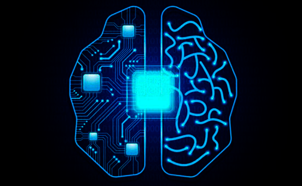
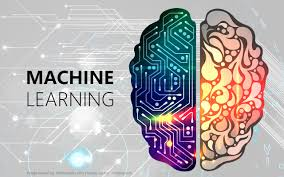
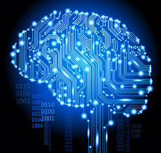
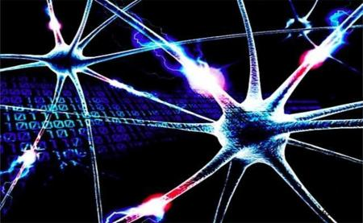
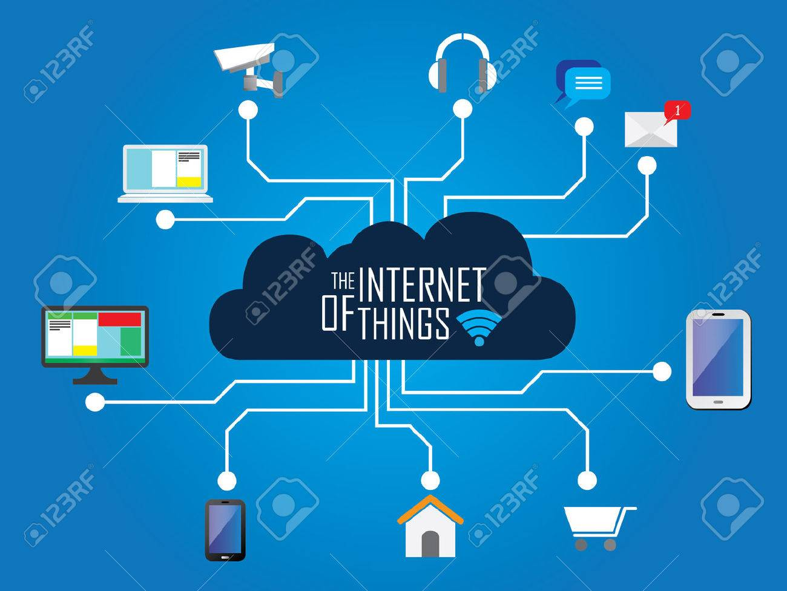

|
HTML 5
HTML5 (HyperText Markup Language, versión 5) es la quinta revisión importante del lenguaje básico de la World Wide Web, HTML .HTML5 especifica dos variantes de sintaxis para HTML: una «clásica», HTML (text/html), conocida como HTML5, y una variante XHTML conocida como sintaxis XHTML5. Lo primero que debemos saber es que HTML sea cual sea su versión no es un lenguaje de programación, tan solo es un Lenguaje de marcado, se usan una serie de etiquetas estandarizadas, se usa para crear la estructura de una web, y se ha puesto de moda para las aplicaciones moviles. Gracias a como PhoneGap a esta moda se a sumado Mozilla, con su Firefox OS; así que como podemos comprobar es casi obligatorio como mínimo conocerlo sea cual sea la plataforma a la que queramos desarrollar; como he dicho nos sirve para dar la estructura a una web (el esqueleto) después podremos darle colores, formas y organizarlo con las hojas de estilo en cascada (CSS) y se recomienda usar su ultima versión CSS3, aunque esta es otra batalla de la que hablaremos en otra ocasión; ahora que sabemos que es, y para que sirve, es el momento de conocer la etiqueta que debe aparecer en cualquier documento HTML5.
- Article: esta etiqueta sirve para definir un artículo, un comentario de usuario o una publicación independiente dentro del sitio.
- Header, footer: estas etiquetas individuales ahorran tener que insertar IDs para cada uno, como se solía hacer anteriormente.
- Nav: la negación puede ser insertada directamente en el markup, entre estas etiquetas, que nos permitirán hacer que nuestras listas oficien de navegación.
- Ection: con esta etiqueta, una de las más importantes de las novedades, se puede definir todo tipo de secciones dentro de un documento.
- Audio y video: estas son las dos más importantes etiquetas de HTML5, dado que nos permiten acceder de forma más simple a contenido multimedia que puede ser reproducido por casi todo tipo de dispositivos; marcan el tipo de contenido que estará en su interior.
- Mbed:con esta etiqueta se puede marcar la presencia de un contenido interactivo o aplicación externa.
- Canvas: finalmente, esta etiqueta nos permite introducir un “lienzo” dentro de un documento, para poder dibujar gráficos por vectores; será necesario el uso de JavaScript.

CSS3
CSS3 es la última evolución del lenguaje de las Hojas de Estilo en Cascada (Cascading Style Sheets), y pretende ampliar la versión CSS2.1. Trae consigo muchas novedades altamente esperadas , como las esquinas redondeadas, sombras, gradientes , transiciones o animaciones, y nuevos layouts como multi-columnas , cajas flexibles o maquetas de diseño en cuadrícula (grid layouts). El Nivel 2 de CSS necesitó 9 años, desde Agosto de 2002 hasta Junio de 2011, para alcanzar el estado de Recomendación. Esto fué debido al hecho de que algunas características secundarias fueron retiradas de las especificaciones globales, con el fin de acelerar la normalización de las características no problemáticas, el Grupo de Trabajo CSS de la W3C, en una decisión referida como la doctrina Beijing dividió CSS en componentes más pequeños llamados módulos cada uno de estos módulos es ahora una parte independiente del lenguaje y se dirije a la estandarización a su propio ritmo mientras algunos modulos módulos son ya recomendados de la W3C, otros todavía son borradores iniciales tambíen se añaden nuevos módulos cuando se identifican nuevas necesidades. La especificación CSS es mantenida por el Wide Web Consortium (W3C) . El MIME type text/css está registrado para su uso por CSS descrito en el FRC 2318. El W3C proporciona una herramienta de validación de CSS gratuita para los documentos CSS. Formalmente, no existe un estandar de CSS3 por sí solo cada módulo es estandarizado independientemente,por lo que el estandar CSS consiste en CSS2.1 Estos módulos extienden y mejoran la especificación CSS2.1 la cual construye el núcleo de la especificación.
JAVASCRIPT
JavaScript es un lenguaje que puede ser utilizado por profesionales y para quienes se inician en el desarrollo y diseño de sitios web. No requiere de compilación ya que el lenguaje funciona del lado del cliente, los navegadores son los encargados de interpretar estos códigos. ava por su parte tiene como principal característica ser un lenguaje independiente de la plataforma. Se puede crear todo tipo de programa que puede ser ejecutado en cualquier ordenador del mercado: Linux, Windows, Apple, etc. Debido a sus características también es muy utilizado para internet. Desde el 2012, todos los navegadores modernos soportan completamente ECMAScript 5.1, una versión de javascript. Los navegadores más antiguos soportan por lo menos ECMAScript 3. La sexta edición se liberó en julio del 2015. JavaScript se ha convertido en uno de los lenguajes de programación más populares en internet. Al principio, sin embargo, muchos desarrolladores renegaban del lenguaje porque el público al que va dirigido lo formaban publicadores de artículos y demás aficionados, entre otras razones.
PROGRESSIVE WEB APPS
Las aplicaciones web progresivas ( PVA ) son aplicaciones web que son páginas web o sitios web regulares , pero que pueden aparecer al usuario como aplicaciones tradicionales o aplicaciones móviles nativas . El tipo de aplicación intenta combinar características ofrecidas por la mayoría de los navegadores modernos con los beneficios de una experiencia móvil. Una de las características de las Progressive Web App es su capacidad de funcionar sin conexión. Una vez más, la idea es ofrecer la mejor experiencia al usuario y evitar mostrarle el mensaje de conexión insuficiente. Las PWA se apoya en un "service worker", cuyo propósito incluye el almacenamiento del contenido en el caché cuando la app se abre por primera vez. De esta manera, después de la primera visita, el contenido puede estar disponible sin conexión, desde la lista de artículos hasta algunos detalles.

INTELIGENCIA ARTIFICIAL
La inteligencia artificial (IA), también llamada inteligencia computacional, es la inteligencia exhibida por máquinas. En ciencia de la computación, una máquina «inteligente» ideal es un agente racional flexible que percibe su entorno y lleva a cabo acciones que maximicen sus posibilidades de éxito en algún objetivo o tarea. Según Takeyas (2007) la IA es una rama de las ciencias computacionales encargada de estudiar modelos de cómputo capaces de realizar actividades propias de los seres humanos en base a dos de sus características primordiales: el razonamiento y la conducta. También existen distintos tipos de percepciones y acciones, que pueden ser obtenidas y producidas, respectivamente, por sensores físicos y sensores mecánicos en máquinas, pulsos eléctricos u ópticos en computadoras, tanto como por entradas y salidas de bits de un software y su entorno software. Para Nils John Nilsson son cuatro los pilares básicos en los que se apoya la inteligencia artificial:
- Búsqueda del estado requerido en el conjunto de los estados producidos por las acciones posibles.
- Redes neuronales artificiales (análogo al funcionamiento físico del cerebro de animales y humanos).
- Razonamiento mediante una lógica formal análogo al pensamiento.abstracto humano.

Machine Learning es una disciplina científica del ámbito de la Inteligencia Artificial que crea sistemas que aprenden automáticamente. Aprender en este contexto quiere decir identificar patrones complejos en millones de datos. La cantidad de datos que se generan actualmente en las empresas se está incrementado de forma exponencial. Extraer información valiosa de ellos supone una ventaja competitiva que no se puede menospreciar. En CleverData pensamos que es una oportunidad a la que se le debe prestar especial atención. El aprendizaje automático tiene una amplia gama de aplicaciones, incluyendo motores de busqueda, diagnósticos médicos, detección de fraude en el uso de tarjetas de crédito,analisis de mercado de valores, clasificación de secuencias de ADN, reconocimiento del habla y del lenguaje escrito, juegos y robótica. Esta competencia inherente para aprender de los datos, que sitúa a Machine Learning como una expresión de la Inteligencia Artificial Más información
- The 7 Steps
- Función
- Aprendizaje de machine Learning

Deep Learning (también conocido como aprendizaje estructurado profundo o aprendizaje jerárquico ) es parte de una familia más amplia de métodos de aprendizaje automatico basados en representaciones de datos de aprendizaje , en oposición a los algoritmos específicos de tareas. El aprendizaje puede ser supervisado , semi-supervisado o no supervisado. Los modelos de aprendizaje profundo están vagamente inspirados por el procesamiento de la información y los patrones de comunicación en los sistema nervioso biológicos , pero tienen varias diferencias con las propiedades estructurales y funcionales de los cerebros biológicos, lo que los hace incompatibles con las evidencias de la neurociencia . Los grandes proveedores de servicios en la nube han comenzado a ofrecer servicios de infraestructura especializados para procesamiento con GPU. Nvidia se ha asociado con diversos proveedores para ofrecer dichos servicios, Amazon, Azure e IBM por nombrar algunos. El aprendizaje profundo es una clase de algoritmos de aprendizaje automático que: - utilice una cascada de múltiples capas de unidades de Sistema no lineales para la extracción de características y la transformación. Cada capa sucesiva usa la salida de la capa previa como entrada.
- aprender en forma supervisada (p. ej., clasificación) y / o no supervisada (p. ej., análisis de patrones).
- aprender múltiples niveles de representaciones que corresponden a diferentes niveles de abstracción; los niveles forman una jerarquía de conceptos.
Más informaciones
- Introducción
- Tensorflow

Las redes neuronales (también conocidas como sistemas conexionales ) son un modelo computacional basado en un gran conjunto de unidades neuronales simples ( neuronas artificiales), de forma aproximadamente análoga al comportamiento observado en los axones de las neuronas en los cerebros biológicos. Las redes neuronales suelen consistir en varias capas o un diseño de cubo, y la ruta de la señal atraviesa de adelante hacia atrás. Propagación hacia atrás es donde se utiliza la estimulación hacia adelante o en el "frente" para restablecer los pesos de las unidades neuronales y esto a veces se realiza en combinación con una formación en la que se conoce el resultado correcto. Las redes neuronales se han utilizado para resolver una amplia variedad de tareas, como la visión por computador y el reconocimiento de voz , que son difíciles de resolver usando la ordinaria programación basado en reglas. Las redes neuronales suelen consistir en varias capas o un diseño de cubo , y la ruta de la señal atraviesa de adelante hacia atrás.
Más información
- Que es la red neuronal?
- Modelo de red neuronal
- Cómo funciona la red neuronal
CRIPTOMONEDAS
Una criptomoneda, criptodivisa (del inglés cryptocurrency) o criptoactivo es un medio digital de intercambio. La primera criptomoneda que empezó a operar fue el bitcoin en 2009 y, desde entonces, han aparecido muchas otras con diferentes características y protocolos como Litecoin, Ethereum , Ripple, Dogecoin.
En los sistemas de criptomonedas, se garantiza la seguridad, integridad y equilibrio de sus estados de cuentas (contabilidad) por medio de un entramado de agentes (transferencia de archivo segmentada o transferencia de archivo multifuente) que se verifican (desconfían) mutuamente llamados mineros, que son, en su mayoría, público en general y protegen activamente la red (el entramado) al mantener una alta tasa de procesamiento de algoritmos, con la finalidad de tener la oportunidad de recibir una pequeña propina, que se reparte de manera aleatoria. Los primeros intentos de integrar la criptografía con el dinero electrónico fueron hechos por David Chaum, mediante el DigiCash y el ecash, los cuales utilizaban la criptografía para volver anónimas las transacciones de dinero, aunque con una emisión y liquidación (pago) centralizado. Está previsto que en el futuro la computación cuántica pueda llegar a ser una realidad, lo que rompería el equilibrio en caso de que los desarrolladores no pudieran implementar a tiempo el sistema para usar algoritmos poscuánticos, por tratarse de una tecnología propietaria.
Más información
- Introducción
- Que son?
- Función que realiza la criptomonedas
- 5 criptomonedas que se comprar en el 2018

BLOCKCHAIN
Un blockchain , originalmente cadena de bloqueo , es una lista creciente de registros, llamados bloques , que se vinculan mediante criptografía . criptomonedas utilizan ampliamente las cadenas cuadradas que son legibles por el público . Bloqueas privadas han sido propuestas para uso comercial. Algunos mercadeo de blockchains ha sido llamado "aceite de serpiente". Los datos almacenados en la cadena de bloques normalmente suelen ser transacciones (p. ej. financieras) por eso es frecuente llamar a los datos transacciones. Sin embargo, no es necesario que lo sean. Realmente podríamos considerar que lo que se registran son cambios atómicos del estado del sistema. Por ejemplo una cadena de bloques puede ser usada para estampillar documentos y asegurarlos frente a alteraciones. Un blockchain es un ledger digital descentralizado, distribuido y público que se utiliza para registrar transacciones en muchas computadoras para que el registro no se pueda alterar retroactivamente sin la alteración de todos los bloques subsiguientes y el consenso de la red. Más informaciones
- Concepto de blockchain
- La verdad matemática
- Innovación con blockchain
- Hacia una economia de propósito

CIBERSEGURIDAD
Según los profesionales en seguridad de ISACA (Information Systems Audit and Control Association) la ciberseguridad se define como una capa de protección para los archivos de información, a partir de ella, se trabaja para evitar todo tipo de amenazas, las cuales ponen en riesgo la información que es procesada, transportada y almacenada en cualquier dispositivo. Es un hecho que, en esta sociedad que hoy en día es más global, móvil y digital, los riesgos que se relacionan con la seguridad de información se multiplican, es por ello que los expertos en la ciberseguridad se encuentran muy demandados en el mercado laboral, y cada día este número aumenta. La seguridad informática debe establecer normas que minimicen los riesgos a la información información o infraestructura informática. Las amenazas pueden ser causadas por: - Usuarios: causa del mayor problema ligado a la seguridad de un sistema informático.
- Programas maliciosos: programas destinados a perjudicar o a hacer un uso ilícito de los recursos del sistema.
- Errores de programación: la mayoría de los errores de programación que se pueden considerar como una amenaza informática es por su condición de poder ser usados como exploits por los crackers.
- Intrusos: personas que consiguen acceder a los datos o programas a los cuales no están autorizados (crackers, defacers, hackers, script kiddie o script boy, viruxers, etc.).
Más informació
- Concepto de cyberseguridad
- Plataforma de desarrollo
- Breve Introducción
- Espionaje o cibervigilancia

REALIDAD VIRTUAL
La realidad virtual (RV) es un entorno de escenas u objetos de apariencia real. La acepción más común refiere a un entorno generado mediante tecnología informática, que crea en el usuario la sensación de estar inmerso en él. Dicho entorno es contemplado por el usuario a través de un dispositivo conocido como gafas o casco de realidad virtual . Las aplicaciones que en la actualidad encontramos de la realidad virtual a actividades de la vida cotidiana son muchas y diversas. Hay que destacar: la reconstrucción de la herencia cultural, la medicina, la simulación de multitudes y la sensación de presencia. El término realidad virtual (RV) se popularizó a finales de la década de 1980 por Jaron Lanier, uno de los pioneros del campo. Al mismo tiempo, también apareció el término Realidad Artificial (RA) . La realidad virtual se aplica a diversas áreas, incluyendo industria para adultos, arte, educación , entretenimiento y Video Juegos así como narrativas interactivas, milicia, educación, y medicina. Debido al crecimiento latente es predecible que llegue a cubrir otras industrias. Más información
- Historia de la realidad virtual
- Causas de la realidad virtual
- Las mejores experiencia en la realidd virtual
- Ejemplo de marketing de la realidad virtual

REALIDAD AUMENTADA
La realidad aumentada (RA) es el término que se usa para definir la visión de un entorno físico del mundo real, a través de un dispositivo tecnológico. Los dispositivos de realidad aumentada normalmente constan de unos cascos o gafas y un sistema de visualización para mostrar al usuario la información virtual que se añade a la real. El headset lleva incorporado sistemas de GPS, necesarios para poder localizar con precisión la situación del usuario. En torno a 1992, Tom Caudell acuñó el término realidad aumentada, sucediéndose posteriormente medios y definiciones relativos a ella. Una de ellas fue dada por Ronald Azuma (1997). La definición de Azuma dice que la realidad aumentada:
- Combina elementos reales y virtuales.
- Es interactiva en tiempo real.
- Está registrada en 3D.
Más información
- Que es la realidad aumentada
- ¿Cómo funciona y uso?
- APPS de realidd aumentada
- Realidad Aumentada Infantil

REALIDAD MIXTA
La realidad mixta (RM), también llamada a veces realidad híbrida, es la combinación de realidad virtual y realidad aumentada. Esta combinación permite crear nuevos espacios en los que interactúan tanto objetos y/o personas reales como virtuales. Es decir, se puede considerar como una mezcla entre la realidad, realidad aumentada, virtualidad aumentada y realidad virtual. En 1994 Paul Milgram y Fumio Kishino definieron el concepto de realidad mixta como cualquier espacio entre los extremos del continuo de la virtualidad. Este continuo de la virtualidad se extiende desde el mundo completamente real hasta el entorno completamente virtual, encontrándose entre medio de estos la realidad aumentada y realidad virtual. 1.IPCM (sigla del inglés, Interactive Product Content Management): que consiste en poder presentar productos interactivos al cliente, es decir, crear un nuevo catálogo con réplicas en 3D proyectadas en la realidad de un producto que antes sólo se podía consultar mediante imágenes o vídeos
Estas imágenes en 3D se podrán introducir en el mundo virtual. El usuario podrá ver el resultado mediante una interfaz en el ordenador. Hasta el momento, esta aplicación se ha utilizado mayoritariamente en videojuegos, como el EyeToy para la consola PlayStation 2 de Sony.
Más información
- Windows Mixed Reality
- ¿Que es realidad mixta
- Realidad mixma robotica
- Comparativa

IOT(INTERNET DE LAS COSAS)
Internet de las cosas (en inglés, Internet of Things, abreviado IoT;1 IdC, por sus siglas en español 2) es un concepto que se refiere a la interconexión digital de objetos cotidianos con Internet. El monitoreo y control de operaciones de infraestructura urbana y rural como puentes, vías férreas y parques eólicos es una aplicación clave de IoT. Las aplicaciones para dispositivos conectados a internet son amplias. Múltiples categorizaciones han sido sugeridas, la mayoría están de acuerdo en separar las aplicaciones en tres principales ramas de aplicación: consumidores, empresarial, e infraestructura. Más información
- TOP 7 IOT
- Arquitectura del IOT
- Conexión de seguridad del IOT
- Que es IOT
MECATRONICA
La ingeniería mecatrónica es una disciplina que sirve para diseñar y desarrollar productos que involucren sistemas de control para el diseño de productos o procesos inteligentes, lo cual busca crear maquinaria más compleja para facilitar las actividades del ser humano a través de procesos electrónicos en la industria mecánica, principalmente. La mecatrónica tiene como antecedentes inmediatos a la investigación en el área de cibernética realizada en 1936 por Alan Turing, en 1948 por Norbert Wiener y Morthy, las máquinas de control numérico, desarrolladas inicialmente en 1946 por George Devol, los manipuladores, ya sean teleoperados, en 1951 por Goertz, o robotizados, en 1954 por Devol, y los autómatas programables, desarrollados por Bedford Associates en 1968.En 1969, Tetsuro Mori, ingeniero de la empresa japonesa Yaskawa Electric Co., acuña el término mecatrónica, y en 1971 se le otorga el derecho de marca. En 1982 Yaskawa permite el libre uso del término.
Su principal objetivo es cubrir ciertas necesidades como:
- Automatizar la maquinaria: así se consigue que sea ágil, productiva y fiable.
- Creación de productos inteligentes: que sobre todo responden a las necesidades del ser humano.
- Que haya armonía entre componentes mecánicos y electrónicos (hasta ahora la mecánica y la electrónica no manejaban los mismo términos lo que dificultaba los procesos de fabricación o reparación de diferentes equipos).
Más informaciones
- Introducción
- Maqueta mecatrónica
- Avance de macatrónica en pitágora
- Uso útil de la mecatrónica
3D PRINING
La impresión 3D es cualquiera de varios procesos en los que el material se une o solidifica bajo el control de la computadora para crear un objeto tridimensional, [1] con material que se agrega (como moléculas líquidas o granos de polvo fusionados). El término "impresión 3D" originalmente se refería a un proceso que deposita un material aglutinante sobre un lecho de polvo con cabezales de impresora inyección de tinta capa por capa. Más recientemente, el término se está utilizando en la lengua vernácula popular para abarcar una variedad más amplia de técnicas de fabricación aditiva. Modelado
Se pueden crear modelos imprimibles en 3D con un paquete de diseño asistido por computadora (CAD), a través de un escáner 3D , o mediante una cámara digital simple y software de fotogrametría . Más información
- Impresora de tinta termica
- Impresora codificadora
- Impresora para caracteres grandes
- multifunciones de 3D PRINTING

TECNOLOGIA G5
La quinta generación de tecnología móvil está aproximándose, aunque suene difícil de digerir ya que existen compañías móviles que no tiene completamente la tecnología G4, esta nueva idea ya está ejecutándose y tiene grandes beneficios, según los expertos. Con gran impacto económico y productivo la tecnología de quinta generación, es la proxima manera de manejar la telefonía móvil. Nuevo estándar de banda ancha inalámbrica que proporciona mayores velocidades, cobertura y prestaciones que el actual LTE-4G.
En telecomunicaciones, 5G son las siglas utilizadas para referirse a la quinta generación de tecnologías de telefonía móvil. Es la sucesora de la tecnología 4G . Actualmente se encuentra sin estandarizar y las empresas de telecomunicación están desarrollando sus prototipos. Está previsto que su uso común sea en 2020. Más información
- La nueva generación de comunicación
- Tecnología G5 y su uso
- La siniestra tecnología G5
- Limitantes y perspectiva
Resumen
HTML
EL nuevo estándar de HTML es HTML5. Aunque algunas funcionalidades no están operativas para todos los navegadores (sobre todo para nuestro querido IE) es un punto y aparte en el diseño web. HTML5 ha dado un paso para integrar la web en HTML. CSS3
Con los últimos avances en CSS3 muchos de los efectos que antes sólo alcanzable en Photoshop ahora puede ser replicado en código CSS, pero a veces es difícil de visualizar la aparición de estos efectos, mirando a unas pocas líneas de sintaxis. Aquí es donde los generadores de CSS pueden venir muy bien, este resumen de las herramientas hace que sea fácil para crear los efectos CSS que necesita con la ayuda de interfaces gráficas. JAVASCRIPT
Javascript es un lenguaje que debido a potencia todo desarrollador debe conocer para mejorar sus páginas, además por su sencillez incluso aquellas personas con menos experiencia y conocimientos en programación van a poder aprenderlo en poco tiempo. PROGRESSIVE WEB APPS
Progressive Web Apps son la herramienta ideal para mejorar cualquier estrategia de marketing, ofreciéndole a los usuario una experiencia móvil sumamente perfecta y también aumentando notoriamente los ingresos de cualquier tipo de comercio electrónico. Algo muy importante a destacar es que al no requerir una publicación ni instalación, el cliente podrá tener su PWA en menos de 24 horas. INTELIGENCIA ARTIFICIAL
La inteligencia artificial es la disciplina que se encarga de construir procesos que al ser ejecutados sobre una arquitectura física producen acciones o resultados que maximizan una medida de rendimiento, el hombre llega a tener la idea de un ser superior y se preguntaría cómo funcionaría su pensamiento. Esto provoca que el hombre cada día que pasa invente máquinas con inteligencia artificial capaces de realizar lo que el hombre no tendría las capacidades suficientes o corre riesgo al realizarlo. Cuando dos voces la de un humano y la de una máquina no se puedan distinguir se abra conseguido la gran inteligencia artificial. Machine Learning es una disciplina científica del ámbito de la Inteligencia Artificial que crea sistemas que aprenden automáticamente. Aprender en este contexto quiere decir identificar patrones complejos en millones de datos. La máquina que realmente aprende es un algoritmo que revisa los datos y es capaz de predecir comportamientos futuros. Automáticamente, también en este contexto, implica que estos sistemas se mejoran de forma autónoma con el tiempo, sin intervención humana. Aprendizaje profundo es un conjunto de algoritmos de clase aprendizaje automático que intenta modelar abstracciones de alto nivel en datos usando arquitecturas compuestas de transformaciones no lineales múltiples. Una red neuronal es un modelo simplificado que emula el modo en que el cerebro humano procesa la información: Funciona simultaneando un número elevado de unidades de procesamiento interconectadas que parecen versiones abstractas de neuronas. CRIPTOMONEDAS
Las criptomonedas no son monedas físicas, son electrónicas, un activo digital que permanece como dato. La tecnología detrás de las monedas electrónicas controla una gran parte de su valor, que mantiene con la nueva tecnología en un modo seguro a la hora de identificar y transferir el capital. BLOCKCHAIN
Una cadena de bloques (block chain), también conocida como libro de contabilidad distribuido (distributed ledger), es una base de datos distribuida que registra bloques de información y los entrelaza para facilitar la recuperación de la información y la verificación de que ésta no ha sido cambiada. CIBERSEGURIDAD
La cyberseguridad no es un aspecto meramente técnico; requiere la definición de nuevas actividades y responsabilidades e involucrar a toda la organización. En este sentido, para conseguir un nivel de cyberseguridad aceptable son necesarios conocimiento y experiencia en dos mundos, el mundo del Control y el mundo de la Seguridad de Sistemas de Información Tradicionales. REALIDAD VIRTUAL
La podemos definir como un sistema informático que genera en tiempo real representaciones de la realidad, que de hecho no son más que ilusiones ya que se trata de una realidad perceptiva sin ningún soporte físico y que únicamente se da en el interior de los ordenadores.
REALIDAD AUMENTADA
La Realidad Aumentada (RA) es una tecnología que permite superponer elementos virtuales sobre nuestra visión de la realidad. Cada vez más demandada, en 2020 se convertirá en un negocio que roce los 120.000 millones de dólares a nivel mundial. REALIDAD MIXTA
La realidad mixta es un espacio en el que se mezclan la interactividad de la realidad virtual y el poder visual de la realidad aumentada. Esta combinación de fuerzas permite al usuario ingresar de lleno en un entorno real, con la particularidad de poder interactuar con elementos virtuales. IOT (Internet de las Cosas)
El Internet de las cosas debería codificar de 50 a 100 000 millones de objetos y seguir el movimiento de estos. Se calcula que todo ser humano está rodeado, al menos, por un total de aproximadamente 1000 a 5000 objetos. Según la empresa Gardner, en el 2020 habrá en el mundo aproximadamente 26 mil millones de dispositivos con un sistema de conexión al Internet de las cosas. MECATRONICA
El principal objetivo del Ingeniero en Mecatrónica es programar e integrar electrónicamente máquinas capaces de automatizar procesos de producción, así como desarrollar robots con una inteligencia superior llamada skinet 3D PRINTING
El término "impresión 3D" originalmente se refería a un proceso que deposita un material aglutinante sobre un lecho de polvo con cabezales de impresora de inyección de tinta capa por capa. Más recientemente, el término se está utilizando en la lengua vernácula popular para abarcar una variedad más amplia de técnicas de fabricación aditiva. TECNOLOGIA G5
En telecomunicaciones, 5G son las siglas utilizadas para referirse a la quinta generación de tecnologías de telefonía móvil. Es la sucesora de la tecnología 4G. Actualmente se encuentra sin estandarizar y las empresas de telecomunicación están desarrollando sus prototipos. Está previsto que su uso común sea en 2020.
|